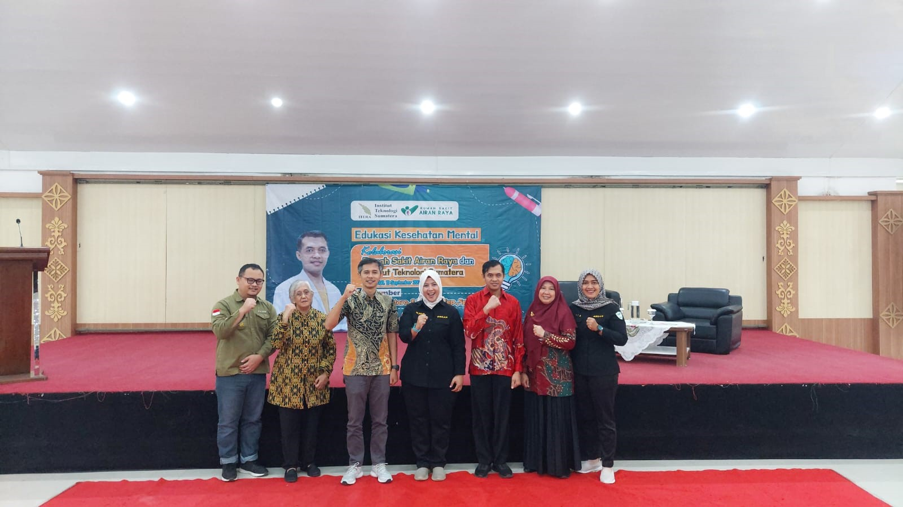

Itera dan RS Airan Raya Gelar Seminar Kesehatan Mental, Lantik 70 Pengurus Kelas TPB
Institut Teknologi Sumatera (Itera) bekerja sama dengan Rumah Sakit
Airan Raya menggelar seminar edukasi bertajuk “Kesehatan Mental
Sebagai Kunci Keberhasilan Belajar”, sekaligus melantik 70 pengurus
kelas Tahap Persiapan Bersama (TPB) angkatan 2025, di Aula GKU 1
Itera, pada tanggak 11 September 2025.Kegiatan ini bertujuan untuk
meningkatkan kesadaran, pemahaman, dan keterampilan mahasiswa serta
masyarakat dalam menjaga kesehatan jiwa. Seminar menghadirkan
narasumber Ns. Dwiyantoro, S.Kep., M.Kep., Sp.Kep.J., seorang pakar
keperawatan jiwa yang berpengalaman dalam praktik klinis maupun
pendidikan kesehatan mental. Dalam paparannya, Dwiyantoro menegaskan
bahwa kesehatan mental sama pentingnya dengan kesehatan fisik,
terutama bagi generasi muda yang sedang menghadapi tantangan
akademik, sosial, dan personal.Kegiatan dibuka secara resmi oleh
Ketua Pusat Implementasi Inovasi, Lembaga Penjaminan Mutu dan
Pengembangan Pembelajaran (LPMPP) Itera, Dr. Handoyo, S.Si., M.T.
Dalam sambutannya, ia menekankan pentingnya sinergi antara perguruan
tinggi dan fasilitas layanan kesehatan dalam memberikan kontribusi
nyata bagi masyarakat.
“Menjaga kesehatan mental bukan hanya soal menghindari
gangguan jiwa, tetapi juga bagaimana kita mampu mengelola stres, membangun hubungan
yang sehat, dan mengembangkan potensi diri secara optimal,” ujar Ns. Dwiyantoro.